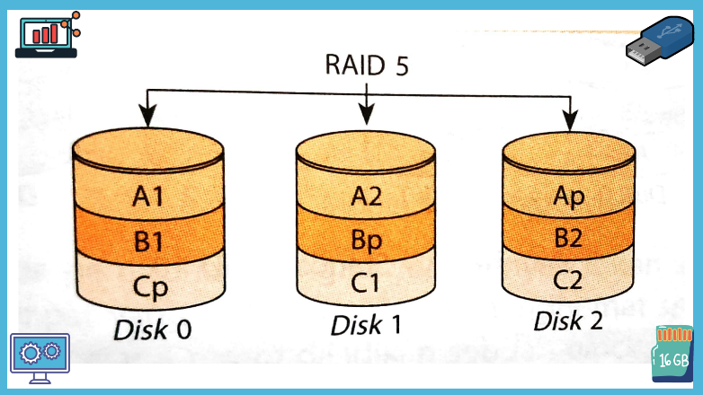

Magnetic Disk
Magnetic disk adalah piringan atau cakram bundar yang terbuat dari logam maupun plastik yang mampu menyimpan daya magnet sebagai media penyimpan data. Karakteristik utama sebuah memori sekunder bertipe magnetic disk adalah sebagai berikut.
- Head Moving Head Moving memiliki dua jenis head-peranti yang bertugas menulis dan membaca data pada piringan, yaitu sebagai berikut.
- Fixed head disk, berfungsi untuk membaca atau menulis per track
- Moved head disk, hanya terdapat sebuah head baca atau tulis pada permukaan disk yang bergerak maju mundur untuk mencari data dalam sebuah wilayah track.
- Disk Portability Ada dua jenis disk jika dilihat dari model penempatannya, di antaranya sebagai berikut.
- Permanent disk, yaitu disk yang ditempatkan secara permanen pada drive
- Removable disk, yaitu piringan yang dapat dilepas dan diganti dengan disk lain
- Surface
- Double side, yaitu dua piringan yang dapat menyimpan data magnetic
- Single side, hanya satu sisi piringan yang dapat menyimpan data magnetic
- Sum of disk
- Single platter, hanya terdapat sebuah piringan dalam drive
- Multi platter, dapat memiliki lebih dari sebuah piringan dalam drive
- Floppy Disk Floppy disk merupakan salah satu jenis memori sekunder yang memiliki kemampuan baca-tulis data. Jenis memori sekunder ini terdiri atas piringan dengan dua tipe diameter, yaitu 5 inci dan 3 inci. Struktur cakram dalam floppy disk terdiri atas bagian-bagian yaitu Track, Sector, dan Boot area.
- Hard disk Hardisk adalah jenis media penyimpan dengan teknologi magnetic disk yang memiliki karakteristik moved head disk, permanent disk, double side, dan multi platter. Bagian dalam hardisk yaitu Platter, Spindle, Head, dan Logic board.
Pita Magnetik
Pita magnetik (magnetic tape) adalah media penyimpan data yang terbuat dari campuran plastik dan ferric oxide seperti pita untuk menyimpan informasi secara batch. Konsep kerja pembacaan dan penulisan data pada pita dilakukan secara berurutan menggunakan head (tape head).
Ada dua tipe media penyimpanan berbasis pita magnetic, di antaranya sebagai berikut.
- Reel To Reel Tape, merupakan teknologi pita paling awal dengan lebar 1/2 inci dan panjang 2.400 feet.
- Cartridge Tape,memiliki bentuk seperti sebuah kaset video atau audio. Pita magnetik tipe ini sering digunakan sebagai media penyimpanan pada komputer mini.
Teknologi RAID
RAID (Redundant Array of Independent Disks) merupakan penyimpanan data (data storage) dengan mengkombinasikan dan mengintegrasikan beberapa hard drive menjadi satu kesatuan unit. Tujuannya adalah untuk meningkatkan keandalan akses data, performa data, dan I/O hard disk.
Ada beberapa jenis standar dalam teknologi RAID, yaitu sebagai berikut.
- RAID 0 Standar ini menggunakan metode striping (striping adalah proses membagi data ke dalam beberapa blok) tanpa adanya fitur redundansi data dan fault tolerance (maksimal jumlah kerusakan hard disk dalam skema RAID yang menyebabkan kerusakan data). Data akan disimpan secara menyebar ke setiap hard disk. Akibatnya, jika salah satu hard disk rusak, data tersebut juga hilang. RAID 0 ditunjukkan pada gambar berikut.
- RAID 1 Sistem ini memerlukan minimal dua hard disk (berjumlah genap) dengan menggunakan metode mirroring (menyalin isi sebuah hardisk ke hardisk lain dengan tujuan sebagai back up) tanpa parity atau metode striping. Standar RAID 1 ditunjukkan pada gambar berikut.
- RAID 2 Standar ini menggunakan sistem striping dengan memanfaatkan model parity hamming sebagai back up data jika salah satu hard disk rusak. Tiga harddisk terakhir berfungsi untuk menyimpan hamming code dari setiap bit yang ada di hardisk utama.
- RAID 3 Standar RAID 3 juga menggunakan sistem striping. Hard disk yang terakhir berfungsi sebagai penyimpan parity hasil perhitungan setiap bit dalam hardisk utama.
- RAID 4 Metode yang digunakan mirip dengan sistem RAID 3, tetapi informasi parity yang digunakan adalah informasi dari setiap blok hard disk.
- RAID 5 Konsepnya sama seperti RAID 4, yaitu menggunakan metode striping pada saat write. Selanjutnya, setiap data Informasi parity langsung didistribusikan ke setiap hard disk yang terhubung dengan sistem RAID 5. Standar RAID 5 ditunjukkan pada gambar berikut.
- RAID 6 RAID 6 merupakan perbaikan sistem RAID 5 dengan menambahkan informasi parity menjadi dua, yaitu p dan q. Standar RAID 6 ditunjukkan pada gambar berikut.
- RAID 10 Standar RAID 10 merupakan gabungan dari RAID 1 dan RAID O atau sering disebut sebagai nested RAID. Jumlah hard disk minimal, yaitu empat. Tujuannya untuk meningkatkan performa read/write serta proteksi data yang baik. Standar RAID 10 ditunjukkan pada gambar berikut.

Optikal Disk
Optical disk merupakan media penyimpan yang menggunakan sinar laser dalam mengakses dan merekam data pada piringan. Optical disk terbuat dari bahan-bahan optic yang terbuat dari resin (polycarbonate) yang permukaannya dilapisi bahan reflektif, misalnya alumunium. Bahan ini memungkinkan data dapat ditulis dan dibaca menggunakan teknologi laser. Ciri utama sebuah media penyimpan optical disk adalah sebagai berikut.
- Memiliki kapasitas penyimpanan data dalam Jumlah besar hingga ukuran gigabyte.
- Menggunakan teknologi laser untuk menulis dan membaca data pada disk.
- Akses data cukup cepat yang bergantung pada putaran disk.

- Laserdisc (LD) Karakteristik utama LD adalah piringan optic dengan diameter 11,81 inci (30 cm). Kedua sisi permukaan dapat digunakan untuk menyimpan data, misalnya video atau film. Penulisan dan pembacaan data dalam format analog menggunakan sinar laser.